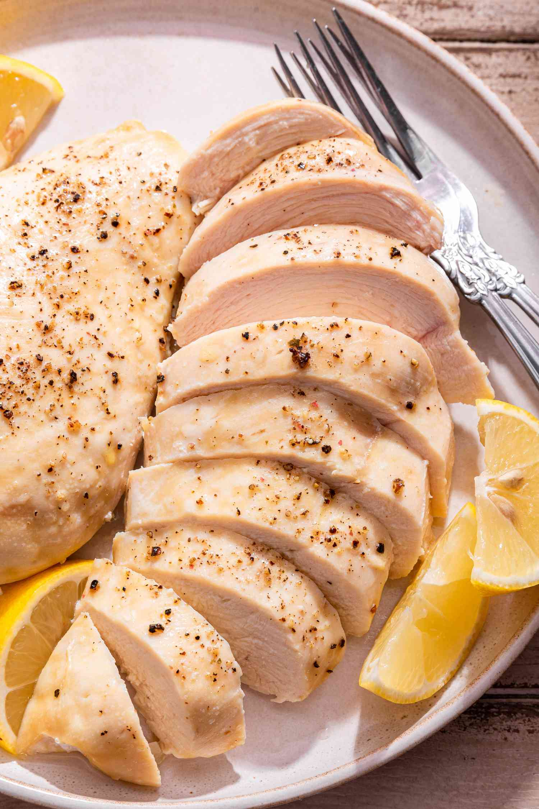

Perfect Juicy Chicken Breast

Keep the chicken moist.
Chicken breast is a no-brainer. But why does it always come out so dry and chewy? Because you aren't brining.
Ingredients
- 2-3 boneless chicken breast, raw
- large mixing bowl full of warm (not hot) water
- 1/4 cup coarse salt
- salt and pepper, to taste
Steps
- Dissolve the salt into the bowl of warm water. Add raw chicken breasts whole into the bowl. Put the bowl in the fridge and let it sit for a few hours (up to 8).
- Remove the chicken and rinse with water. Season with salt and pepper as usual, or whatever seasoning you like.
- Bake or grill until internal temperature reaches 165ºF.